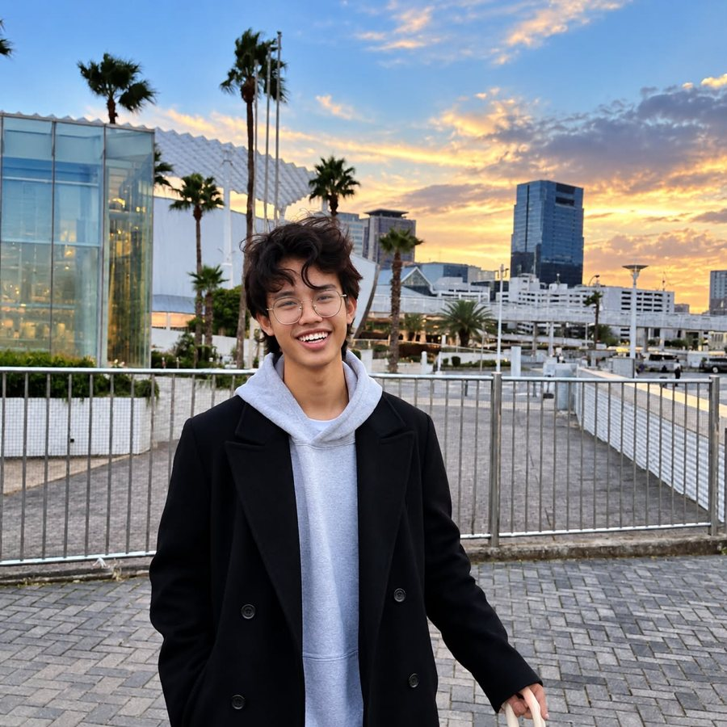

こんにちは、AR KARです。
Frontend Developer / Photographer / Videographer
現在、エール学園ICT校 AIビジネス学科で、IT・AI・ビジネスを学んでいます。フロントエンド開発を学びながら、写真・映像制作の経験も活かし、見やすく、使いやすく、魅力的なWebサイトを制作できる人材を目指しています。
テクノロジーとクリエイティブで、アイデアをカタチに。

写真私について About
私は現在、日本のエール学園ICT校 AIビジネス学科で学んでいます。技術やビジネスが発展している日本で、新しい知識や考え方を学びたいと考え、来日しました。
学んだIT・AI・ビジネスの知識を将来の仕事に活かし、日本とミャンマーをはじめ、国や文化を越えて人やビジネスをつなぐ人材になりたいと考えています。将来的には、新しいサービスやビジネスを生み出し、多くの人に価値を届けられる会社をつくることも目標のひとつです。
来日当初は、言語や文化の違いに難しさを感じました。それでも、分からないことをそのままにせず、メモを取り、質問し、自分で調べながら少しずつ成長してきました。一度決めたことは、最後まで努力を続けることを大切にしています。
ITに加えて、写真・映像制作の経験もあります。「技術 × ビジネス × クリエイティブ」の3つの視点から物事を考えられることが、私の強みです。
スキル Skills
Frontend Development 学習中
フロントエンド開発を中心に学習中です。
- HTML5学習中
- CSS3学習中
- JavaScript学習中
- Responsive Web Design学習中
- Git / GitHub学習中
- UI/UX Basics学習中
AI & Business
エール学園ICT校 AIビジネス学科で、IT・AI・ビジネスの知識を学んでいます。AIを技術として知るだけでなく、「AIやITをどのように社会やビジネスの課題解決に活用できるか」という視点を大切にしています。
Photography 2018年頃〜
人物・イベント・風景などを撮影してきました。撮影後の編集・レタッチも行います。「写真を見た人に何を感じてもらいたいのか」を考えて撮影しています。
- Portrait Photography
- Event Photography
- Adobe Lightroom
- Adobe Photoshop
- Photo Retouching
- Color Correction
Video / Videography
ミャンマーで映像制作に取り組みました。撮影だけでなく、構成・編集・色調整も経験しています。大きな制作会社での実績ではありませんが、実際の撮影現場で技術を磨いてきました。
- Wedding Video
- Event Video
- Promotional Video
- Short Video
- Adobe Premiere Pro
- DaVinci Resolve
- CapCut
Creative Thinking
Web制作・写真・映像のどれでも、次の4点を考えて制作しています。ツールを操作するだけでなく、目的を考えて制作することを大切にしています。
- 誰に見てもらうのか
- 何を伝えたいのか
- どうすれば分かりやすくなるのか
- どうすれば印象に残るのか
制作実績 Projects
※ Web作品は学習用のサンプルプロジェクトです。実務案件ではありません。
経歴 Journey
- 2018Photographyの活動を開始
- 2018–2022人物・イベントなどの写真撮影、映像制作を経験
- Japan日本へ留学
- 現在エール学園ICT校 AIビジネス学科で学習中
- 現在Frontend Developmentを中心にITスキルを学習中
- FutureIT・AI・クリエイティブの経験を活かせる仕事に挑戦